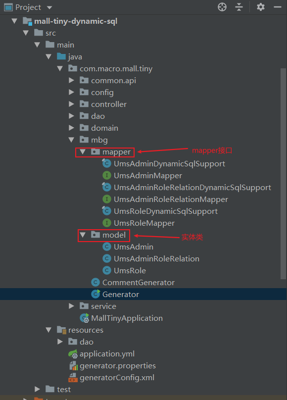

学习不走弯路，关注公众号 回复「学习路线」，获取mall项目专属学习路线！
干掉mapper.xml！MyBatis新特性动态SQL真香！
当我们使用MyBatis的时候，需要在mapper.xml中书写大量的SQL语句。当我们使用MyBatis Generator（MBG）作为代码生成器时，也会生成大量的mapper.xml文件。其实从MBG 1.3.6版本以后，MyBatis官方已经推荐使用Dynamic SQL，使用这一新特性基本就不用写mapper.xml文件了，使用起来非常方便，推荐给大家！
Dynamic SQL简介
在我们使用Spring的时候，有XML和Java两种配置方式。在使用SpringBoot时，已经推荐使用Java配置，基本不用xml配置了。使用Dynamic SQL就好比是使用Java的方式来操作MyBatis。Dynamic SQL是用于生成动态SQL语句的框架，提倡使用Java API的方式来实现SQL操作，支持复杂查询和多表查询。
Dynamic SQL具有如下特性：
- 类型安全：可以确保参数类型和数据库字段类型相匹配；
- 富有表现力：语句的构建方式可以清楚地传达其含义；
- 使用灵活：可以使用and，or和nested条件的任意组合来构建where子句；
- 扩展性强：可以同时为MyBatis3, Spring JDBC和纯JDBC框架生成SQL语句；
- 轻量级：只需添加一个小的依赖项，没有传递依赖。
开始使用
首先我们通过一个入门示例将Dynamic SQL用起来，该示例会包含基础的CRUD操作。对MBG使用不了解的朋友可以先看下之前的文章《解放双手！MyBatis官方代码生成工具给力！》
集成Dynamic SQL
- 在
pom.xml中添加如下依赖，对比之前使用MBG，仅仅多添加了MyBatis的动态SQL依赖；
<dependencies>
<!--SpringBoot整合MyBatis-->
<dependency>
<groupId>org.mybatis.spring.boot</groupId>
<artifactId>mybatis-spring-boot-starter</artifactId>
<version>2.1.3</version>
</dependency>
<!--MyBatis分页插件-->
<dependency>
<groupId>com.github.pagehelper</groupId>
<artifactId>pagehelper-spring-boot-starter</artifactId>
<version>1.3.0</version>
</dependency>
<!--集成druid连接池-->
<dependency>
<groupId>com.alibaba</groupId>
<artifactId>druid-spring-boot-starter</artifactId>
<version>1.1.10</version>
</dependency>
<!-- MyBatis 生成器 -->
<dependency>
<groupId>org.mybatis.generator</groupId>
<artifactId>mybatis-generator-core</artifactId>
<version>1.4.0</version>
</dependency>
<!-- MyBatis 动态SQL支持 -->
<dependency>
<groupId>org.mybatis.dynamic-sql</groupId>
<artifactId>mybatis-dynamic-sql</artifactId>
<version>1.2.1</version>
</dependency>
<!--Mysql数据库驱动-->
<dependency>
<groupId>mysql</groupId>
<artifactId>mysql-connector-java</artifactId>
<version>8.0.15</version>
</dependency>
</dependencies>
- 在
application.yml中对数据源和MyBatis的mapper.xml文件路径进行配置，只需配置自定义mapper.xml路径即可；
spring:
datasource:
url: jdbc:mysql://localhost:3306/mall?useUnicode=true&characterEncoding=utf-8&serverTimezone=Asia/Shanghai
username: root
password: root
mybatis:
mapper-locations:
- classpath:dao/*.xml
- 添加Java配置，用于扫描Mapper接口路径，MBG生成的放在
mapper包下，自定义的放在dao包下。
/**
* MyBatis配置类
* Created by macro on 2019/4/8.
*/
@Configuration
@MapperScan({"com.macro.mall.tiny.mbg.mapper","com.macro.mall.tiny.dao"})
public class MyBatisConfig {
}
使用代码生成器
- 在使用MBG生成代码前，我们还需要对其进行一些配置，首先在
generator.properties文件中配置好数据库连接信息；
jdbc.driverClass=com.mysql.cj.jdbc.Driver
jdbc.connectionURL=jdbc:mysql://localhost:3306/mall?useUnicode=true&characterEncoding=utf-8&serverTimezone=Asia/Shanghai
jdbc.userId=root
jdbc.password=root
- 然后在
generatorConfig.xml文件中对MBG进行配置，配置属性说明直接参考注释即可；
<?xml version="1.0" encoding="UTF-8"?>
<!DOCTYPE generatorConfiguration
PUBLIC "-//mybatis.org//DTD MyBatis Generator Configuration 1.0//EN"
"http://mybatis.org/dtd/mybatis-generator-config_1_0.dtd">
<generatorConfiguration>
<properties resource="generator.properties"/>
<context id="MySqlContext" targetRuntime="MyBatis3DynamicSQL">
<property name="beginningDelimiter" value="`"/>
<property name="endingDelimiter" value="`"/>
<property name="javaFileEncoding" value="UTF-8"/>
<!-- 为模型生成序列化方法-->
<plugin type="org.mybatis.generator.plugins.SerializablePlugin"/>
<!-- 为生成的Java模型创建一个toString方法 -->
<plugin type="org.mybatis.generator.plugins.ToStringPlugin"/>
<!--可以自定义生成model的代码注释-->
<commentGenerator type="com.macro.mall.tiny.mbg.CommentGenerator">
<!-- 是否去除自动生成的注释 true：是 ： false:否 -->
<property name="suppressAllComments" value="true"/>
<property name="suppressDate" value="true"/>
<property name="addRemarkComments" value="true"/>
</commentGenerator>
<!--配置数据库连接-->
<jdbcConnection driverClass="${jdbc.driverClass}"
connectionURL="${jdbc.connectionURL}"
userId="${jdbc.userId}"
password="${jdbc.password}">
<!--解决mysql驱动升级到8.0后不生成指定数据库代码的问题-->
<property name="nullCatalogMeansCurrent" value="true" />
</jdbcConnection>
<!--指定生成model的路径-->
<javaModelGenerator targetPackage="com.macro.mall.tiny.mbg.model" targetProject="mall-tiny-dynamic-sql\src\main\java"/>
<!--指定生成mapper接口的的路径-->
<javaClientGenerator type="XMLMAPPER" targetPackage="com.macro.mall.tiny.mbg.mapper"
targetProject="mall-tiny-dynamic-sql\src\main\java"/>
<!--生成全部表tableName设为%-->
<table tableName="ums_admin">
<generatedKey column="id" sqlStatement="MySql" identity="true"/>
</table>
<table tableName="ums_role">
<generatedKey column="id" sqlStatement="MySql" identity="true"/>
</table>
<table tableName="ums_admin_role_relation">
<generatedKey column="id" sqlStatement="MySql" identity="true"/>
</table>
</context>
</generatorConfiguration>
与之前使用MBG有所不同，
targetRuntime需要改为MyBatis3DynamicSql，用于配置生成mapper.xml路径的sqlMapGenerator标签也不需要配置了；之前使用MBG时自定义了实体类注解的生成，写了个类CommentGenerator继承DefaultCommentGenerator，在
addFieldComment方法中将Swagger注解写入到了实体类的属性上；
/**
* 自定义注释生成器
* Created by macro on 2018/4/26.
*/
public class CommentGenerator extends DefaultCommentGenerator {
/**
* 给字段添加注释
*/
@Override
public void addFieldComment(Field field, IntrospectedTable introspectedTable,
IntrospectedColumn introspectedColumn) {
String remarks = introspectedColumn.getRemarks();
//根据参数和备注信息判断是否添加备注信息
if(addRemarkComments&&StringUtility.stringHasValue(remarks)){
//数据库中特殊字符需要转义
if(remarks.contains("\"")){
remarks = remarks.replace("\"","'");
}
//给model的字段添加swagger注解
field.addJavaDocLine("@ApiModelProperty(value = \""+remarks+"\")");
}
}
}
- 在使用Dynamic SQL的时候，这种方法已经无用，需要在
addFieldAnnotation中将Swagger注解写入到了实体类的属性上；
/**
* 自定义注释生成器
* Created by macro on 2018/4/26.
*/
public class CommentGenerator extends DefaultCommentGenerator {
@Override
public void addFieldAnnotation(Field field, IntrospectedTable introspectedTable, IntrospectedColumn introspectedColumn, Set<FullyQualifiedJavaType> imports) {
if (!addRemarkComments || CollUtil.isEmpty(imports)) return;
long count = imports.stream()
.filter(item -> API_MODEL_PROPERTY_FULL_CLASS_NAME.equals(item.getFullyQualifiedName()))
.count();
if (count <= 0L) {
return;
}
String remarks = introspectedColumn.getRemarks();
//根据参数和备注信息判断是否添加备注信息
if (StringUtility.stringHasValue(remarks)) {
//数据库中特殊字符需要转义
if (remarks.contains("\"")) {
remarks = remarks.replace("\"", "'");
}
//给model的字段添加swagger注解
field.addJavaDocLine("@ApiModelProperty(value = \"" + remarks + "\")");
}
}
}
- 一切准备就绪，执行Generator类的main方法，生成代码结构信息如下，可以发现已经不再生成mapper.xml文件和Example类，取而代之的是生成了DynamicSqlSupport类。

实现基本的CRUD操作
这里使用的是
mall-tiny项目中权限管理功能相关表，具体可以参考《还在从零开始搭建项目？手撸了款快速开发脚手架！》。
- 查看下MBG生成的Mapper接口，比之前使用MBG时增加了很多方法，并且有了一些默认的方法实现，可见之前在mapper.xml中的实现都已经转移到Mapper接口中去了，单表CRUD直接调用对应方法即可；
@Mapper
public interface UmsAdminMapper {
@Generated("org.mybatis.generator.api.MyBatisGenerator")
BasicColumn[] selectList = BasicColumn.columnList(id, username, password, icon, email, nickName, note, createTime, loginTime, status);
@Generated("org.mybatis.generator.api.MyBatisGenerator")
@SelectProvider(type=SqlProviderAdapter.class, method="select")
long count(SelectStatementProvider selectStatement);
@Generated("org.mybatis.generator.api.MyBatisGenerator")
@DeleteProvider(type=SqlProviderAdapter.class, method="delete")
int delete(DeleteStatementProvider deleteStatement);
@Generated("org.mybatis.generator.api.MyBatisGenerator")
@InsertProvider(type=SqlProviderAdapter.class, method="insert")
@SelectKey(statement="SELECT LAST_INSERT_ID()", keyProperty="record.id", before=false, resultType=Long.class)
int insert(InsertStatementProvider<UmsAdmin> insertStatement);
@Generated("org.mybatis.generator.api.MyBatisGenerator")
@SelectProvider(type=SqlProviderAdapter.class, method="select")
@ResultMap("UmsAdminResult")
Optional<UmsAdmin> selectOne(SelectStatementProvider selectStatement);
@Generated("org.mybatis.generator.api.MyBatisGenerator")
@SelectProvider(type=SqlProviderAdapter.class, method="select")
@Results(id="UmsAdminResult", value = {
@Result(column="id", property="id", jdbcType=JdbcType.BIGINT, id=true),
@Result(column="username", property="username", jdbcType=JdbcType.VARCHAR),
@Result(column="password", property="password", jdbcType=JdbcType.VARCHAR),
@Result(column="icon", property="icon", jdbcType=JdbcType.VARCHAR),
@Result(column="email", property="email", jdbcType=JdbcType.VARCHAR),
@Result(column="nick_name", property="nickName", jdbcType=JdbcType.VARCHAR),
@Result(column="note", property="note", jdbcType=JdbcType.VARCHAR),
@Result(column="create_time", property="createTime", jdbcType=JdbcType.TIMESTAMP),
@Result(column="login_time", property="loginTime", jdbcType=JdbcType.TIMESTAMP),
@Result(column="status", property="status", jdbcType=JdbcType.INTEGER)
})
List<UmsAdmin> selectMany(SelectStatementProvider selectStatement);
@Generated("org.mybatis.generator.api.MyBatisGenerator")
@UpdateProvider(type=SqlProviderAdapter.class, method="update")
int update(UpdateStatementProvider updateStatement);
@Generated("org.mybatis.generator.api.MyBatisGenerator")
default long count(CountDSLCompleter completer) {
return MyBatis3Utils.countFrom(this::count, umsAdmin, completer);
}
@Generated("org.mybatis.generator.api.MyBatisGenerator")
default int delete(DeleteDSLCompleter completer) {
return MyBatis3Utils.deleteFrom(this::delete, umsAdmin, completer);
}
@Generated("org.mybatis.generator.api.MyBatisGenerator")
default int deleteByPrimaryKey(Long id_) {
return delete(c ->
c.where(id, isEqualTo(id_))
);
}
@Generated("org.mybatis.generator.api.MyBatisGenerator")
default int insert(UmsAdmin record) {
return MyBatis3Utils.insert(this::insert, record, umsAdmin, c ->
c.map(username).toProperty("username")
.map(password).toProperty("password")
.map(icon).toProperty("icon")
.map(email).toProperty("email")
.map(nickName).toProperty("nickName")
.map(note).toProperty("note")
.map(createTime).toProperty("createTime")
.map(loginTime).toProperty("loginTime")
.map(status).toProperty("status")
);
}
@Generated("org.mybatis.generator.api.MyBatisGenerator")
default int insertSelective(UmsAdmin record) {
return MyBatis3Utils.insert(this::insert, record, umsAdmin, c ->
c.map(username).toPropertyWhenPresent("username", record::getUsername)
.map(password).toPropertyWhenPresent("password", record::getPassword)
.map(icon).toPropertyWhenPresent("icon", record::getIcon)
.map(email).toPropertyWhenPresent("email", record::getEmail)
.map(nickName).toPropertyWhenPresent("nickName", record::getNickName)
.map(note).toPropertyWhenPresent("note", record::getNote)
.map(createTime).toPropertyWhenPresent("createTime", record::getCreateTime)
.map(loginTime).toPropertyWhenPresent("loginTime", record::getLoginTime)
.map(status).toPropertyWhenPresent("status", record::getStatus)
);
}
@Generated("org.mybatis.generator.api.MyBatisGenerator")
default Optional<UmsAdmin> selectOne(SelectDSLCompleter completer) {
return MyBatis3Utils.selectOne(this::selectOne, selectList, umsAdmin, completer);
}
@Generated("org.mybatis.generator.api.MyBatisGenerator")
default List<UmsAdmin> select(SelectDSLCompleter completer) {
return MyBatis3Utils.selectList(this::selectMany, selectList, umsAdmin, completer);
}
@Generated("org.mybatis.generator.api.MyBatisGenerator")
default List<UmsAdmin> selectDistinct(SelectDSLCompleter completer) {
return MyBatis3Utils.selectDistinct(this::selectMany, selectList, umsAdmin, completer);
}
@Generated("org.mybatis.generator.api.MyBatisGenerator")
default Optional<UmsAdmin> selectByPrimaryKey(Long id_) {
return selectOne(c ->
c.where(id, isEqualTo(id_))
);
}
@Generated("org.mybatis.generator.api.MyBatisGenerator")
default int update(UpdateDSLCompleter completer) {
return MyBatis3Utils.update(this::update, umsAdmin, completer);
}
@Generated("org.mybatis.generator.api.MyBatisGenerator")
static UpdateDSL<UpdateModel> updateAllColumns(UmsAdmin record, UpdateDSL<UpdateModel> dsl) {
return dsl.set(username).equalTo(record::getUsername)
.set(password).equalTo(record::getPassword)
.set(icon).equalTo(record::getIcon)
.set(email).equalTo(record::getEmail)
.set(nickName).equalTo(record::getNickName)
.set(note).equalTo(record::getNote)
.set(createTime).equalTo(record::getCreateTime)
.set(loginTime).equalTo(record::getLoginTime)
.set(status).equalTo(record::getStatus);
}
@Generated("org.mybatis.generator.api.MyBatisGenerator")
static UpdateDSL<UpdateModel> updateSelectiveColumns(UmsAdmin record, UpdateDSL<UpdateModel> dsl) {
return dsl.set(username).equalToWhenPresent(record::getUsername)
.set(password).equalToWhenPresent(record::getPassword)
.set(icon).equalToWhenPresent(record::getIcon)
.set(email).equalToWhenPresent(record::getEmail)
.set(nickName).equalToWhenPresent(record::getNickName)
.set(note).equalToWhenPresent(record::getNote)
.set(createTime).equalToWhenPresent(record::getCreateTime)
.set(loginTime).equalToWhenPresent(record::getLoginTime)
.set(status).equalToWhenPresent(record::getStatus);
}
@Generated("org.mybatis.generator.api.MyBatisGenerator")
default int updateByPrimaryKey(UmsAdmin record) {
return update(c ->
c.set(username).equalTo(record::getUsername)
.set(password).equalTo(record::getPassword)
.set(icon).equalTo(record::getIcon)
.set(email).equalTo(record::getEmail)
.set(nickName).equalTo(record::getNickName)
.set(note).equalTo(record::getNote)
.set(createTime).equalTo(record::getCreateTime)
.set(loginTime).equalTo(record::getLoginTime)
.set(status).equalTo(record::getStatus)
.where(id, isEqualTo(record::getId))
);
}
@Generated("org.mybatis.generator.api.MyBatisGenerator")
default int updateByPrimaryKeySelective(UmsAdmin record) {
return update(c ->
c.set(username).equalToWhenPresent(record::getUsername)
.set(password).equalToWhenPresent(record::getPassword)
.set(icon).equalToWhenPresent(record::getIcon)
.set(email).equalToWhenPresent(record::getEmail)
.set(nickName).equalToWhenPresent(record::getNickName)
.set(note).equalToWhenPresent(record::getNote)
.set(createTime).equalToWhenPresent(record::getCreateTime)
.set(loginTime).equalToWhenPresent(record::getLoginTime)
.set(status).equalToWhenPresent(record::getStatus)
.where(id, isEqualTo(record::getId))
);
}
}
- 生成代码中有一些DynamicSqlSupport类，比如UmsAdminDynamicSqlSupport，主要是把数据库表和字段抽象成了SqlTable和SqlColumn对象，估计是为了防止我们硬编码；
public final class UmsAdminDynamicSqlSupport {
@Generated("org.mybatis.generator.api.MyBatisGenerator")
public static final UmsAdmin umsAdmin = new UmsAdmin();
public static final SqlColumn<Long> id = umsAdmin.id;
public static final SqlColumn<String> username = umsAdmin.username;
public static final SqlColumn<String> password = umsAdmin.password;
public static final SqlColumn<String> icon = umsAdmin.icon;
public static final SqlColumn<String> email = umsAdmin.email;
public static final SqlColumn<String> nickName = umsAdmin.nickName;
public static final SqlColumn<String> note = umsAdmin.note;
public static final SqlColumn<Date> createTime = umsAdmin.createTime;
public static final SqlColumn<Date> loginTime = umsAdmin.loginTime;
public static final SqlColumn<Integer> status = umsAdmin.status;
@Generated("org.mybatis.generator.api.MyBatisGenerator")
public static final class UmsAdmin extends SqlTable {
public final SqlColumn<Long> id = column("id", JDBCType.BIGINT);
public final SqlColumn<String> username = column("username", JDBCType.VARCHAR);
public final SqlColumn<String> password = column("password", JDBCType.VARCHAR);
public final SqlColumn<String> icon = column("icon", JDBCType.VARCHAR);
public final SqlColumn<String> email = column("email", JDBCType.VARCHAR);
public final SqlColumn<String> nickName = column("nick_name", JDBCType.VARCHAR);
public final SqlColumn<String> note = column("note", JDBCType.VARCHAR);
public final SqlColumn<Date> createTime = column("create_time", JDBCType.TIMESTAMP);
public final SqlColumn<Date> loginTime = column("login_time", JDBCType.TIMESTAMP);
public final SqlColumn<Integer> status = column("status", JDBCType.INTEGER);
public UmsAdmin() {
super("ums_admin");
}
}
}
- 利用好MBG生成的代码即可完成单表的CRUD操作了，比如下面最常见的操作。
/**
* 后台用户管理Service实现类
* Created by macro on 2020/12/8.
*/
@Service
public class UmsAdminServiceImpl implements UmsAdminService {
@Autowired
private UmsAdminMapper adminMapper;
@Override
public void create(UmsAdmin entity) {
adminMapper.insert(entity);
}
@Override
public void update(UmsAdmin entity) {
adminMapper.updateByPrimaryKeySelective(entity);
}
@Override
public void delete(Long id) {
adminMapper.deleteByPrimaryKey(id);
}
@Override
public UmsAdmin select(Long id) {
Optional<UmsAdmin> optionalEntity = adminMapper.selectByPrimaryKey(id);
return optionalEntity.orElse(null);
}
@Override
public List<UmsAdmin> listAll(Integer pageNum, Integer pageSize) {
PageHelper.startPage(pageNum, pageSize);
return adminMapper.select(SelectDSLCompleter.allRows());
}
}
进阶使用
想要用好Dynamic SQL，上面的基础操作是不够的，还需要一些进阶的使用技巧。
SqlBuilder
SqlBuilder是一个非常有用的类，使用它可以灵活地构建SQL语句的条件，一些常用的条件构建方法如下。
| 条件 | 例子 | 对应SQL |
|---|---|---|
| Between | where(foo, isBetween(x).and(y)) | where foo between ? and ? |
| Equals | where(foo, isEqualTo(x)) | where foo = ? |
| Greater Than | where(foo, isGreaterThan(x)) | where foo > ? |
| In | where(foo, isIn(x, y)) | where foo in (?,?) |
| Like | where(foo, isLike(x)) | where foo like ? |
| Not Equals | where(foo, isNotEqualTo(x)) | where foo <> ? |
| Null | where(foo, isNull()) | where foo is null |
| Present Equals | where(foo, isEqualToWhenPresent(x)) | where foo = ? (will render if x is non-null) |
StatementProvider
回想一下之前我们在mapper.xml中定义select标签的方式，各个select标签相当于Statement。而这里的StatementProvider好比是Statement中参数和SQL语句的封装，方便以Java的方式创建Statement。
条件查询
使用SqlBuilder类构建StatementProvider，然后调用Mapper接口中的方法即可。
- 这里以按用户名和状态查询后台用户并按创建时间降序排列为例，SQL实现如下；
SELECT
id,
username,
PASSWORD,
icon,
email,
nick_name,
note,
create_time,
login_time,
STATUS
FROM
ums_admin
WHERE
( username = 'macro' AND STATUS IN ( 0, 1 ) )
ORDER BY
create_time DESC;
- 使用Dynamic SQL对应的Java代码实现如下，使用SqlBuilder的select方法可以指定查询列，使用from方法可以指定查询表，使用where方法可以构建查询条件，使用orderBy方法可以指定排序。
/**
* 后台用户管理Service实现类
* Created by macro on 2020/12/8.
*/
@Service
public class UmsAdminServiceImpl implements UmsAdminService {
@Override
public List<UmsAdmin> list(Integer pageNum, Integer pageSize, String username, List<Integer> statusList) {
PageHelper.startPage(pageNum, pageSize);
SelectStatementProvider selectStatement = SqlBuilder.select(UmsAdminMapper.selectList)
.from(UmsAdminDynamicSqlSupport.umsAdmin)
.where(UmsAdminDynamicSqlSupport.username, isEqualToWhenPresent(username))
.and(UmsAdminDynamicSqlSupport.status, isIn(statusList))
.orderBy(UmsAdminDynamicSqlSupport.createTime.descending())
.build()
.render(RenderingStrategies.MYBATIS3);
return adminMapper.selectMany(selectStatement);
}
}
Lambda条件查询
使用Lambda表达式实现单表条件查询更加简单，实现上面的条件查询，对应Java代码实现如下。
/**
* 后台用户管理Service实现类
* Created by macro on 2020/12/8.
*/
@Service
public class UmsAdminServiceImpl implements UmsAdminService {
@Override
public List<UmsAdmin> lambdaList(Integer pageNum, Integer pageSize, String username, List<Integer> statusList) {
PageHelper.startPage(pageNum, pageSize);
List<UmsAdmin> list = adminMapper.select(c -> c.where(UmsAdminDynamicSqlSupport.username, isEqualToWhenPresent(username))
.and(UmsAdminDynamicSqlSupport.status, isIn(statusList))
.orderBy(UmsAdminDynamicSqlSupport.createTime.descending()));
return list;
}
}
子查询
之前使用MBG需要在mapper.xml中手写SQL才能实现子查询，使用Dynamic SQL可以直接在Java代码中实现。
- 这里以按角色ID查询后台用户为例，SQL实现如下；
SELECT
*
FROM
ums_admin
WHERE
id IN ( SELECT admin_id FROM ums_admin_role_relation WHERE role_id = 1 )
- 使用Dynamic SQL对应的Java代码实现如下，可以发现SqlBuilder的条件构造方法isIn中还可以嵌套SqlBuilder的查询。
/**
* 后台用户管理Service实现类
* Created by macro on 2020/12/8.
*/
@Service
public class UmsAdminServiceImpl implements UmsAdminService {
@Override
public List<UmsAdmin> subList(Long roleId) {
SelectStatementProvider selectStatement = SqlBuilder.select(UmsAdminMapper.selectList)
.from(UmsAdminDynamicSqlSupport.umsAdmin)
.where(UmsAdminDynamicSqlSupport.id, isIn(SqlBuilder.select(UmsAdminRoleRelationDynamicSqlSupport.adminId)
.from(UmsAdminRoleRelationDynamicSqlSupport.umsAdminRoleRelation)
.where(UmsAdminRoleRelationDynamicSqlSupport.roleId, isEqualTo(roleId))))
.build()
.render(RenderingStrategies.MYBATIS3);
return adminMapper.selectMany(selectStatement);
}
}
Group和Join查询
涉及到多表查询，之前使用MBG的时候基本只能在mapper.xml中手写SQL实现，使用Dynamic SQL可以支持多表查询。
- 这里以按角色统计后台用户数量为例，SQL实现如下；
SELECT
ur.id AS roleId,
ur.NAME AS roleName,
count( ua.id ) AS count
FROM
ums_role ur
LEFT JOIN ums_admin_role_relation uarr ON ur.id = uarr.role_id
LEFT JOIN ums_admin ua ON uarr.admin_id = ua.id
GROUP BY
ur.id;
- 先在Dao中添加一个
groupList方法，然后使用@Results注解定义好resultMap；
/**
* Created by macro on 2020/12/9.
*/
public interface UmsAdminDao {
@SelectProvider(type = SqlProviderAdapter.class, method = "select")
@Results(id = "RoleStatResult", value = {
@Result(column = "roleId", property = "roleId", jdbcType = JdbcType.BIGINT, id = true),
@Result(column = "roleName", property = "roleName", jdbcType = JdbcType.VARCHAR),
@Result(column = "count", property = "count", jdbcType = JdbcType.INTEGER)
})
List<RoleStatDto> groupList(SelectStatementProvider selectStatement);
}
- 然后在Service中调用
groupList方法传入StatementProvider即可，对应的Java代码实现如下。
/**
* 后台用户管理Service实现类
* Created by macro on 2020/12/8.
*/
@Service
public class UmsAdminServiceImpl implements UmsAdminService {
@Override
public List<RoleStatDto> groupList() {
SelectStatementProvider selectStatement = SqlBuilder.select(UmsRoleDynamicSqlSupport.id.as("roleId"), UmsRoleDynamicSqlSupport.name.as("roleName"), count(UmsAdminDynamicSqlSupport.id).as("count"))
.from(UmsRoleDynamicSqlSupport.umsRole)
.leftJoin(UmsAdminRoleRelationDynamicSqlSupport.umsAdminRoleRelation)
.on(UmsRoleDynamicSqlSupport.id, equalTo(UmsAdminRoleRelationDynamicSqlSupport.roleId))
.leftJoin(UmsAdminDynamicSqlSupport.umsAdmin)
.on(UmsAdminRoleRelationDynamicSqlSupport.adminId, equalTo(UmsAdminDynamicSqlSupport.id))
.groupBy(UmsRoleDynamicSqlSupport.id)
.build()
.render(RenderingStrategies.MYBATIS3);
return adminDao.groupList(selectStatement);
}
}
条件删除
使用Dynamic SQL实现条件删除，直接调用Mapper接口中生成好的delete方法即可。
- 这里以按用户名删除后台用户为例，SQL实现如下；
DELETE
FROM
ums_admin
WHERE
username = 'andy';
- 使用Dynamic SQL对应Java中的实现如下。
/**
* 后台用户管理Service实现类
* Created by macro on 2020/12/8.
*/
@Service
public class UmsAdminServiceImpl implements UmsAdminService {
@Override
public void deleteByUsername(String username) {
DeleteStatementProvider deleteStatement = SqlBuilder.deleteFrom(UmsAdminDynamicSqlSupport.umsAdmin)
.where(UmsAdminDynamicSqlSupport.username, isEqualTo(username))
.build()
.render(RenderingStrategies.MYBATIS3);
adminMapper.delete(deleteStatement);
}
}
条件修改
使用Dynamic SQL实现条件修改，直接调用Mapper接口中生成好的update方法即可。
- 这里以按指定ID修改后台用户的状态为例，SQL实现如下；
UPDATE ums_admin
SET STATUS = 1
WHERE
id IN ( 1, 2 );
- 使用Dynamic SQL对应Java中的实现如下。
/**
* 后台用户管理Service实现类
* Created by macro on 2020/12/8.
*/
@Service
public class UmsAdminServiceImpl implements UmsAdminService {
@Override
public void updateByIds(List<Long> ids, Integer status) {
UpdateStatementProvider updateStatement = SqlBuilder.update(UmsAdminDynamicSqlSupport.umsAdmin)
.set(UmsAdminDynamicSqlSupport.status).equalTo(status)
.where(UmsAdminDynamicSqlSupport.id, isIn(ids))
.build()
.render(RenderingStrategies.MYBATIS3);
adminMapper.update(updateStatement);
}
}
一对多查询
使用Dynamic SQL也可以实现一对多查询，只是由于Java注解无法实现循环引用，所以一对多的resultMap只能在mapper.xml来配置，这可能是唯一需要使用mapper.xml的地方。
- 这里以按ID查询后台用户信息（包含对应角色列表）为例，SQL实现如下；
SELECT
ua.*,
ur.id AS role_id,
ur.NAME AS role_name,
ur.description AS role_description,
ur.create_time AS role_create_time,
ur.STATUS AS role_status,
ur.sort AS role_sort
FROM
ums_admin ua
LEFT JOIN ums_admin_role_relation uarr ON ua.id = uarr.admin_id
LEFT JOIN ums_role ur ON uarr.role_id = ur.id
WHERE
ua.id = 1
- 然后在Dao接口中添加
selectWithRoleList方法，这里使用@ResultMap注解引用mapper.xml中定义的resultMap；
/**
* Created by macro on 2020/12/9.
*/
public interface UmsAdminDao {
@SelectProvider(type = SqlProviderAdapter.class, method = "select")
@ResultMap("AdminRoleResult")
AdminRoleDto selectWithRoleList(SelectStatementProvider selectStatement);
}
- 在mapper.xml中添加名称为
AdminRoleResult的resultMap，这里有个小技巧，可以直接引用在Mapper接口中定义好的resultMap；
<resultMap id="AdminRoleResult" type="com.macro.mall.tiny.domain.AdminRoleDto"
extends="com.macro.mall.tiny.mbg.mapper.UmsAdminMapper.UmsAdminResult">
<collection property="roleList" resultMap="com.macro.mall.tiny.mbg.mapper.UmsRoleMapper.UmsRoleResult" columnPrefix="role_">
</collection>
</resultMap>
- 然后在Service实现类中调用即可，为了方便结果集映射给查询列取了别名。
/**
* 后台用户管理Service实现类
* Created by macro on 2020/12/8.
*/
@Service
public class UmsAdminServiceImpl implements UmsAdminService {
@Override
public AdminRoleDto selectWithRoleList(Long id) {
List<BasicColumn> columnList = new ArrayList<>(CollUtil.toList(UmsAdminMapper.selectList));
columnList.add(UmsRoleDynamicSqlSupport.id.as("role_id"));
columnList.add(UmsRoleDynamicSqlSupport.name.as("role_name"));
columnList.add(UmsRoleDynamicSqlSupport.description.as("role_description"));
columnList.add(UmsRoleDynamicSqlSupport.createTime.as("role_create_time"));
columnList.add(UmsRoleDynamicSqlSupport.status.as("role_status"));
columnList.add(UmsRoleDynamicSqlSupport.sort.as("role_sort"));
SelectStatementProvider selectStatement = SqlBuilder.select(columnList)
.from(UmsAdminDynamicSqlSupport.umsAdmin)
.leftJoin(UmsAdminRoleRelationDynamicSqlSupport.umsAdminRoleRelation)
.on(UmsAdminDynamicSqlSupport.id, equalTo(UmsAdminRoleRelationDynamicSqlSupport.adminId))
.leftJoin(UmsRoleDynamicSqlSupport.umsRole)
.on(UmsAdminRoleRelationDynamicSqlSupport.roleId, equalTo(UmsRoleDynamicSqlSupport.id))
.where(UmsAdminDynamicSqlSupport.id, isEqualTo(id))
.build()
.render(RenderingStrategies.MYBATIS3);
return adminDao.selectWithRoleList(selectStatement);
}
}
总结
当我们使用MyBatis官方代码生成器MBG时，配置的targetRuntime决定了使用它的使用方式。Dynamic SQL更倾向于使用Java API来实现SQL操作，传统的方式更倾向于在mapper.xml中手写SQL来实现SQL操作。虽然MyBatis官方推荐使用Dynamic SQL，但选择那种方式全看个人习惯了！
参考资料
官方文档：https://mybatis.org/mybatis-dynamic-sql/docs/introduction.html
项目源码地址
https://github.com/macrozheng/mall-learning/tree/master/mall-tiny-dynamic-sql
公众号